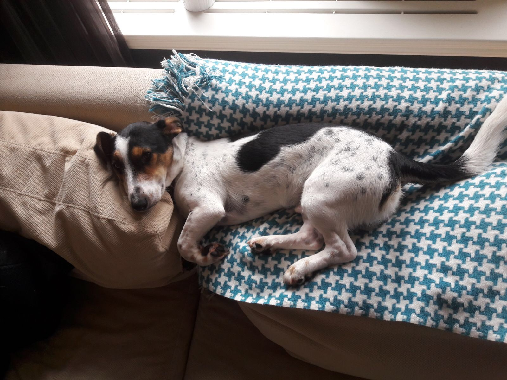

My name is Janosh. I was born in Bulgaria. There I was abandoned in a forest with my mother but luckily I found by a nice lady who rescues dogs. I spent five months in a shelter. Happily I was adopted by some people who live in The Netherlands.The journey was very long from Bulgaria to Netherlands. It took three days locked in a crate in a white van. It was scary but finally we arrived at Houndation. After a quick pee and poop I was collected by Mary and Jules.
Going Dutch

I had never travelled by bike before but I was put in the basket at the front and off I went to my new home. I love my new home except for the Dutch stairs. I cannot walk down but I can run up. Every few days I go for a walk with Outlet and meet all my doggy friends.
I get to go on boats through the canals. Ride up front on the bike. Best of all I love sleeping on the back of the couch. 